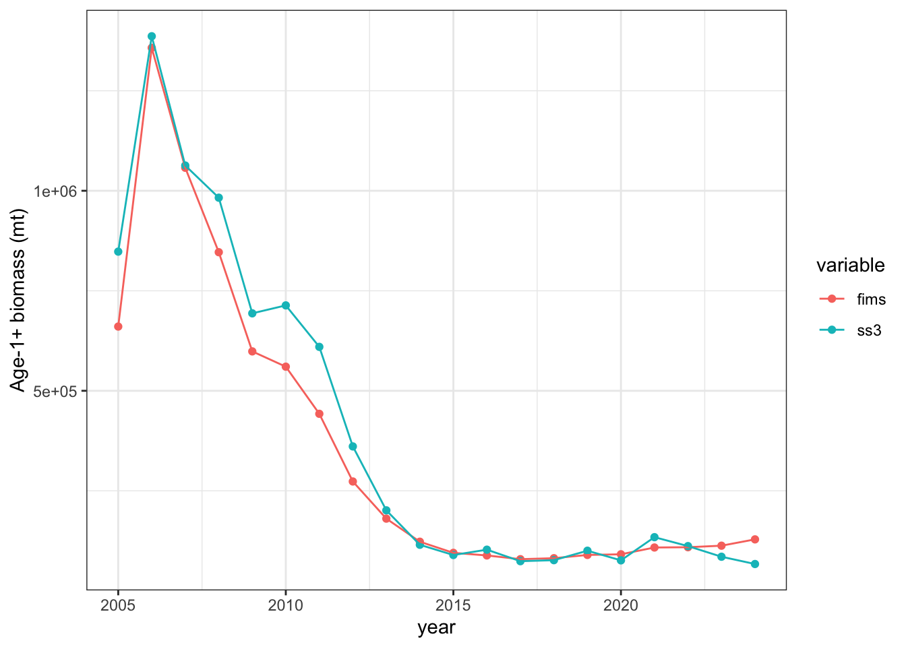
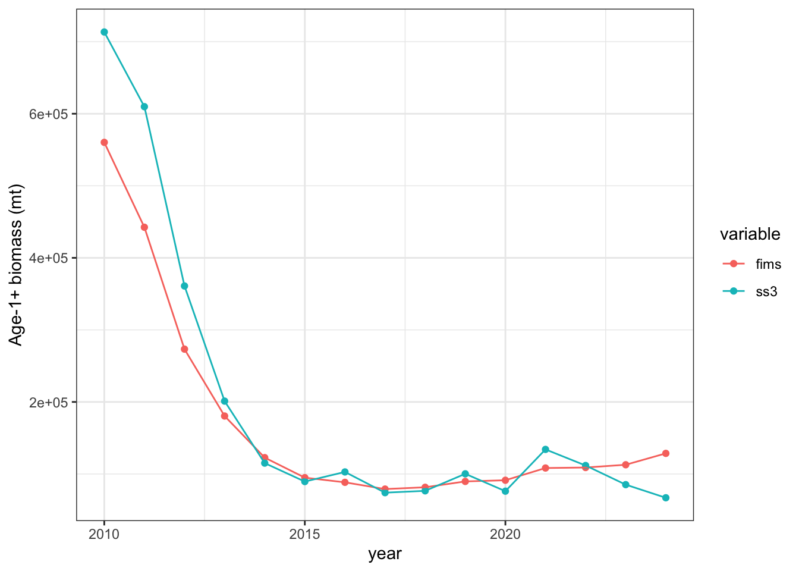
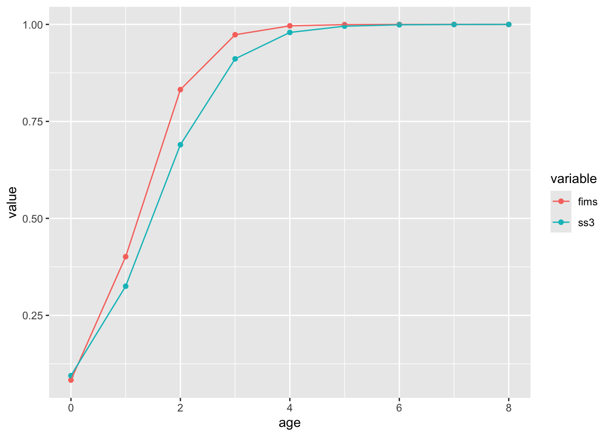

Add a bulleted list and script describing simplifications you had to make
How I simplified my assessment * Convert two-semester time step to annual * Sum the catch values for MexCal S1 and S2 * Sum the age comps for MexCal S1 and S2 * Drop PNW fishing fleet data (catch and age comp data) * Drop spring AT survey index values * Use expected summary biomass values as AT survey CPUE * Fix Q=1 for AT survey, rather than have fixed, year-specific values * No SR_regime parameter estimated (population assumed to start a equilibrium) * Fixed M at 0.8 * Assume time-invariant logistic selectivity AT survey fleets (time-varying age-0 in benchmark assessment) * Assume time-invariant logistic selectivity MexCal fleet (time-varying in benchmark assessment) * Lorenzen age M -> one M value * No ageing error in FIMS? * Assume time-invariant weight at age for the fishery and survey
Add your script that sets up and runs the model
Code
# options(max.print = 1000, device = 'windows')# # library(plyr)# library(reshape2)# library(tidyverse)# library(devtools)# library(patchwork)# library(scales)# withr::local_options(pkg.build_extra_flags = FALSE)# # library(TMB)# # devtools::install_github("kaskr/TMB_contrib_R/TMBhelper")# library(TMBhelper)# library(r4ss)# # #Local version of FIMS downloaded last week# # devtools::load_all("../fims_v2/FIMS")# # # # devtools::install_github("NOAA-FIMS/FIMS")# # pak::pkg_install("NOAA-FIMS/FIMS")# # library(FIMS)clear()rm(list =ls())#--------------------------------------------------------#Logistic function for later uselogistic <-function(x, slope, inflection_point){ out <-1/ (1+exp(-1* slope * (x - inflection_point))) out <-data.frame(x = x, value = out)return(out)}#--------------------------------------------------------#Manually enter data# setwd("C://Users//peter.kuriyama//SynologyDrive/Research//noaa//FIMS")#-----Catchcatch <-data.frame(year =2005:2023, catch =c(29188.50, 53107.00, 69929.40, 56317.80, 33546.40, 17466.40, 39383.10, 2585.38, 5705.77, 2558.63, 7.18, 428.26, 347.11, 514.20, 619.04, 653.15, 285.89, 508.02, 152.31))# ggplot(catch, aes(x = year, y = catch)) + geom_point() + # geom_line() + scale_y_continuous(label = comma)fimscatch <-tibble(type ="landings", name ="fleet1",age =NA, datestart =paste0(catch$year, "-01-01"),dateend =paste0(catch$year, "-12-31"), value = catch$catch,unit ="mt", uncertainty =0.05)#-----CPUEcpue <-data.frame(year =2005:2023, obs =c(649619.0, 899635.0, 956354.0, 863281.0, 652029.0, 504970.0, 395783.0, 293980.0, 182417.0, 89260.1, 46403.0, 40704.0, 44592.1, 48789.1, 53551.8, 59765.8, 68451.7, 71612.5, 68957.9))# ggplot(cpue, aes(x = year, y = obs)) + geom_point() + geom_line() + # scale_y_continuous(label = comma)fimsindex <-tibble(type ="index", name ="survey1",age =NA, datestart =paste0(cpue$year, "-01-01"),dateend =paste0(cpue$year, "-12-31"),value = cpue$obs, unit ='mt', uncertainty = .3)#-----Age compositionsacomps <-read.csv("data_files/sardine_acomps.csv")fimsage <-tibble(type ="age", name = acomps$name,age = acomps$age, datestart =paste0(acomps$Yr, "-01-01"),dateend =paste0(acomps$Yr, "-12-31"),value = acomps$value, unit ="", uncertainty = acomps$Nsamp)#fimsage$uncertainty <- 50 Leave as empirical valuesfimscatch$value <- fimscatch$valuefimsindex$unit <-""#Combine everythingfimsdat <-rbind(fimscatch, fimsindex, fimsage)fimsdat$age <-as.integer(fimsdat$age) fimsdat$value <-as.numeric(fimsdat$value)years <-2005:2023ages <-unique(fimsage$age) ##age 0:8# ages <- ss3dat$agebin_vectornages <-length(ages)nyears <-length(years)nseasons <-1# ages <- 0:ss3dat$Nages # population ages in SS3, starts at age 0nfleets <-2#survey and one fishery#Which fleet is first input? This corresponds to the output I think#------------------------#FIMS data inputfimsdat <-as.data.frame(fimsdat)age_frame <- FIMS::FIMSFrame(fimsdat) #Cannot be FIMSFramefishery_catch <- FIMS::m_landings(age_frame)fishery_agecomp <- FIMS::m_agecomp(age_frame, "fleet1")survey_index <- FIMS::m_index(age_frame, "survey1")survey_agecomp <- FIMS::m_agecomp(age_frame, "survey1")#---------------------------------------#Fishing fleet indexfish_index <- methods::new(Index, nyears)fish_age_comp <- methods::new(AgeComp, nyears, nages)fish_index$index_data <- fishery_catch# Q: I'm confused about FIMSFrame being set up with age comps in proportions# vs here needing age comps in numbers# A: It's just not sorted out in FIMS yet, in the future this could be made simplerfish_age_comp$age_comp_data <- age_frame@data |> dplyr::filter(type =="age"& name =="fleet1") |> dplyr::mutate(n = value * uncertainty) |> dplyr::pull(n) |>round(1)n_missing_data <- nyears * nages -length(fish_age_comp$age_comp_data) #Check dimensions of age composition data# matrix(fish_age_comp$age_comp_data, nyears, nages)fish_age_comp$age_comp_data <-c(rep(-999, n_missing_data), fish_age_comp$age_comp_data)# switches to turn on or off estimationestimate_fish_selex <-FALSEestimate_survey_selex <-FALSEestimate_q <-FALSE#Fix at 1estimate_F <-TRUEestimate_recdevs <-TRUEestimate_init_naa <-TRUEestimate_log_rzero <-TRUE#---------------------------------------#Fishery module#---------------------------------------#Just one combined MexCal fleet### set up fishery## methods::show(DoubleLogisticSelectivity)fish_selex <- methods::new(LogisticSelectivity)#Use parameters close to those estimated in SS model fish_selex$inflection_point$value <-1#Fishery selectivityfish_selex$inflection_point$is_random_effect <-FALSEfish_selex$inflection_point$estimated <- estimate_fish_selex #Estimation onfish_selex$slope$value <-5fish_selex$slope$is_random_effect <-FALSEfish_selex$slope$estimated <- estimate_fish_selex #Estimation on### create fleet object for fishing fish_fleet <- methods::new(Fleet)fish_fleet$nages <- nagesfish_fleet$nyears <- nyearsfish_fleet$log_Fmort <-log(rep(0.2, nyears))fish_fleet$estimate_F <- estimate_Ffish_fleet$random_F <-FALSEfish_fleet$log_q <-0#Not sure if this will be rightfish_fleet$estimate_q <- estimate_qfish_fleet$random_q <-FALSEfish_fleet$log_obs_error <-rep(log(sqrt(log(0.01^2+1))), nyears)# The pos argument can specify the environment in which to assign the object in #any of several ways: as -1 (the default), as a positive integer #(the position in the search list); as the character string name of an element #in the search list; or as an environment (including using sys.frame to access #the currently active function calls).# Set Index, AgeComp, and Selectivity using the IDs from the modules defined abovefish_fleet$SetAgeCompLikelihood(1)fish_fleet$SetIndexLikelihood(1)fish_fleet$SetObservedIndexData(fish_index$get_id()) fish_fleet$SetObservedAgeCompData(fish_age_comp$get_id())fish_fleet$SetSelectivity(fish_selex$get_id())##---- Setup surveysurvey_fleet_index <- methods::new(Index, nyears)survey_age_comp <- methods::new(AgeComp, nyears, nages)survey_fleet_index$index_data <- survey_indexsurvey_age_comp$age_comp_data <- age_frame@data |> dplyr::filter(type =="age"& name =="survey1") |> dplyr::mutate(n = value * uncertainty) |> dplyr::pull(n)n_missing_data <- nyears * nages -length(survey_age_comp$age_comp_data) survey_age_comp$age_comp_data <-c(rep(-999, n_missing_data), survey_age_comp$age_comp_data)## survey selectivity: ascending logistic## methods::show(DoubleLogisticSelectivity)survey_selex <-new(LogisticSelectivity)survey_selex$inflection_point$value <-1.2survey_selex$inflection_point$is_random_effect <-FALSEsurvey_selex$inflection_point$estimated <- estimate_survey_selexsurvey_selex$slope$value <-2survey_selex$slope$is_random_effect <-FALSEsurvey_selex$slope$estimated <- estimate_survey_selex## create fleet object for surveysurvey_fleet <- methods::new(Fleet)survey_fleet$is_survey <-TRUEsurvey_fleet$nages <- nagessurvey_fleet$nyears <- nyearssurvey_fleet$estimate_F <-FALSEsurvey_fleet$random_F <-FALSEsurvey_fleet$log_q <-0# catchability fixed ~1.0 = exp(0)survey_fleet$estimate_q <- estimate_qsurvey_fleet$random_q <-FALSE# Q: why can't the index uncertainty come from FIMSFrame?survey_fleet$log_obs_error <-rep(log(sqrt(log(0.1^2+1))), nyears)survey_fleet$SetAgeCompLikelihood(1)survey_fleet$SetIndexLikelihood(1)survey_fleet$SetSelectivity(survey_selex$get_id())survey_fleet$SetObservedIndexData(survey_fleet_index$get_id())survey_fleet$SetObservedAgeCompData(survey_age_comp$get_id())# Population module# recruitmentrecruitment <- methods::new(BevertonHoltRecruitment)# methods::show(BevertonHoltRecruitment)#sardine sigmaR = 1.2recruitment$log_sigma_recruit$value <-log(1.2) #14.2 is log(R0) in sardine simplified modelrecruitment$log_sigma_recruit$estimated <-FALSE#14.2 is log(R0) in sardine simplified modelrecruitment$log_rzero$value <-17recruitment$log_rzero$is_random_effect <-FALSErecruitment$log_rzero$estimated <-TRUE# sardine steepness is fixed at 0.6steep <- .6recruitment$logit_steep$value <--log(1.0- steep) +log(steep -0.2)recruitment$logit_steep$is_random_effect <-FALSErecruitment$logit_steep$estimated <-FALSErecruitment$estimate_log_devs <- estimate_recdevs# Q: why are parameters "log_devs" when output is "report$log_recruit_dev"?# and are they multipliers, not deviations from zero?# needed to change from 1 to 0 to get stable populationrecruitment$log_devs <-rep(log(1), nyears) # set to no deviations (multiplier) to start# growthwtatage <- r4ss::SS_readwtatage("data_files/sardine_wtatage.ss_new")ewaa_growth <- methods::new(EWAAgrowth)ewaa_growth$ages <- ages# NOTE: getting weight-at-age vector from# petrale_output$wtatage |># dplyr::filter(Sex == 1 & Fleet == -1 & Yr == 1876) |># dplyr::select(paste(0:40)) |># round(4)# ewaa_growth$weights <- c(0.019490,0.077760,0.108865,# 0.133855,0.154360,0.174905,0.184200,# 0.196460,0.214155)ewaa_growth$weights <- wtatage %>%filter(Fleet ==1, Yr ==2010) %>%select(as.character(0:10)) %>% t %>% as.vector# maturitymaturity <-new(LogisticMaturity)# approximate age-based equivalent to length-based maturity in petrale model# based on looking at model$endgrowth |> dplyr::filter(Sex == 1) |> dplyr::select(Age_Beg, Len_Mat)maturity$inflection_point$value <-1.2maturity$inflection_point$is_random_effect <-FALSEmaturity$inflection_point$estimated <-FALSEmaturity$slope$value <-1.5# arbitrary guessmaturity$slope$is_random_effect <-FALSEmaturity$slope$estimated <-FALSE#Look at maturity curve# logistic(0:8, slope = maturity$slope$value,# inflection_point = maturity$inflection_point$value) %>% ggplot(aes(x = x, y = value)) +# geom_point() + geom_line() + scale_y_continuous(limits = c(0, 1))# populationpopulation <-new(Population)# petrale natural mortality is estimated around 0.14M_value <- .8#.8 worked pretty wellpopulation$log_M <-rep(log(M_value), nages * nyears)population$estimate_M <-FALSE###Anyway to control dimension of M estimation?# initial numbers at age based on R0 + mortalityinit_naa <-exp(recruitment$log_rzero$value) *exp(-(ages -1) * M_value)init_naa[nages] <- init_naa[nages] / M_value # sum of infinite seriespopulation$log_init_naa <-log(init_naa)population$estimate_init_naa <- estimate_init_naapopulation$nages <- nagespopulation$ages <- agespopulation$nfleets <-2# fleets plus surveyspopulation$nseasons <- nseasonspopulation$nyears <- nyears# population$proportion_female <- rep(0.5, nages)population$SetMaturity(maturity$get_id())population$SetGrowth(ewaa_growth$get_id())population$SetRecruitment(recruitment$get_id())# make FIMS modelsuccess <-CreateTMBModel()parameters <-list(p =get_fixed())###expand years and ages# crossing(years, ages) %>% mutate(ya = paste(years, ages)) %>% pull(ya)#---------------------------------------------------------------------------#Clunky code to name parameter starting values/estimates to #Specification of estimation is estimated and estimate_F/estimate_Mparname <-999if(fish_selex$inflection_point$estimated) parname <-c(parname,"fishery_selex_inf_poit")if(fish_selex$slope$estimated) parname <-c(parname, "fishery_selec_slo")if(fish_fleet$estimate_F) parname <-c(parname, paste0("F_", years))# if(fish_fleet$estimate_q)if(survey_selex$inflection_point$estimated) parname <-c(parname, "survey_inf_poi")if(survey_selex$slope$estimated) parname <-c(parname, "survey_inf_slo" )if(recruitment$log_sigma_recruit$estimated) parname <-c(parname, "ln_sig_rec")if(recruitment$log_rzero$estimated) parname <-c(parname, "ln_rzero")if(recruitment$logit_steep$estimated) parname <-c(parname, "logi_h")if(recruitment$estimate_log_devs) parname <-c(parname, paste0("recdev_", years))if(maturity$inflection_point$estimated) parname <-c(parname, "mat_inf_poi")if(maturity$slope$estimated) parname <-c(parname, "mat_slo")if(population$estimate_M) parname <-c(parname, paste0("M_", crossing(years, ages) %>%mutate(ya =paste(years, ages)) %>%pull(ya)))if(population$estimate_init_naa) parname <-c(parname, paste0("naa_", ages))parname <- parname[-1]#---------------------------------------------------------------------------#Run model#---------------------------------------------------------------------------pars <-tibble(parname = parname, startingvals = parameters$p)obj <-MakeADFun(data =list(), parameters, DLL ="FIMS", silent =TRUE)report <- obj$report(obj$env$last.par.best)#Are there flags for when something is going wrong with the model where initial values#are all 0?opt <-nlminb(obj$par, obj$fn, obj$gr,control =list(eval.max =10000, iter.max =10000))sds <- TMB::sdreport(obj)endres <- obj$report(obj$env$last.par.best)pars <- pars %>%mutate(endvals = sds$par.fixed) %>% as.data.frame
Add your comparison figures
Code
load("data_files/sardine_simplified_res.Rdata")#------------------------------------------------------------------------#------SSBssbs <- ssres$timeseries %>%select(Yr, SpawnBio) %>%mutate(fims =c(0, 0, endres$ssb[[1]]))names(ssbs)[2] <-'ss3'ssbs %>%filter(Yr >=2005, Yr <2024) %>%melt(id.var ="Yr") %>%ggplot(aes(x = Yr, y = value, group = variable, color = variable)) +geom_point() +geom_line() +ylab("Spawning biomass (mt)") +theme_bw() +xlab("year") +theme(legend.position =c(.9, .9))
Warning: A numeric `legend.position` argument in `theme()` was deprecated in ggplot2
3.5.0.
ℹ Please use the `legend.position.inside` argument of `theme()` instead.
names(age1plus) <-c("year", "fims", "ss3")#Full time series of age-1+ biomassage1plus %>%melt(id.var ="year") %>%ggplot(aes(x = year, y = value, group = variable, color = variable)) +geom_point() +geom_line() +ylab("Age-1+ biomass (mt)") +theme_bw() +theme(legend.position =c(.9, .9))

Code
ggsave("figures/SWFSC-sardine-age1plusbio.png", width =6.8, height =5.25)#Zoomed in time series of age-1+age1plus %>%melt(id.var ="year") %>%filter(year >=2010) %>%ggplot(aes(x = year, y = value, group = variable, color = variable)) +geom_point() +geom_line() +theme_bw() +ylab("Age-1+ biomass (mt)") +theme(legend.position =c(.9, .9))

Code
ggsave("figures/SWFSC-sardine-age1plusbio_zoomedin.png", width =6.8, height =5.25)#------------------------------------------------------------------------#------Recruitmentrecs <- ssres$timeseries %>%select(Yr, Recruit_0) %>%mutate(fims =c(0, 0, endres$recruitment[[1]]))names(recs)[2] <-"ss3"recs %>%filter(Yr >=2005, Yr <2024) %>%melt(id.var ="Yr") %>%ggplot(aes(x = Yr, y = value, group = variable, color = variable)) +theme_bw() +geom_point() +geom_line() +theme(legend.position =c(.9, .9)) +ylab("Recruits (x1000)")
Warning: attributes are not identical across measure variables; they will be
dropped
Code
ggplot(sel_survey, aes(x = age, y = value, group = variable, color = variable)) +geom_point() +geom_line()

Add comparison tables
What was your experience using FIMS? What could we do to improve usability?
Tools to check: * data were inputted correctly (dimension checks) * starting values and settings are reasonable * Perhaps have a model template file that will work as is, then users can modify as necessary * I had issues installing FIMS with install_github that seemed to be related to R settings
Model: * streamline configuration of fleets and maybe make it easier to add additional fleets (perhaps clone existing ones then change specific settings) * Think about ways to modify single model settings based on say different starting values
Output: * include all parameter values and names (fixed and estimated, also show starting values) * Code to generate a default set of figures and tables for use in assessment documents/presentations
What features are most important to add based on this case study?
The ability to start the model at non-equilibrium conditions (In SS3 there is a SR_regime parameter and Initial F to match equilbirium age comps to first year of data age comps) *Does the model year start in the first year of the data input?